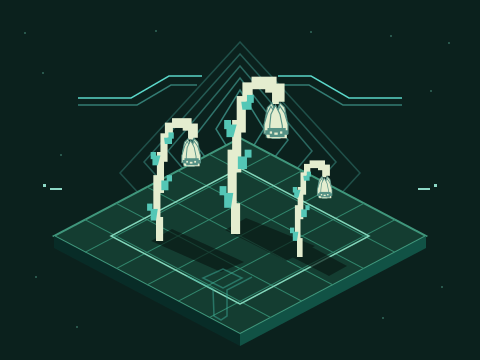
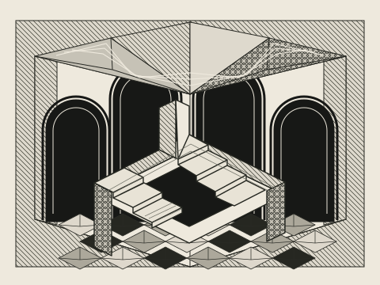
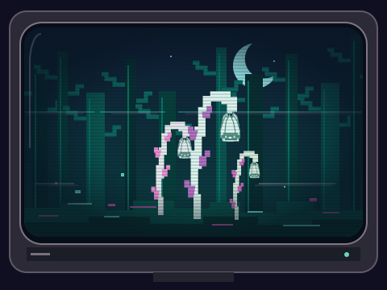
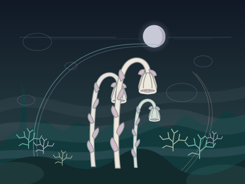
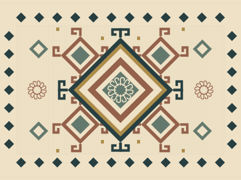
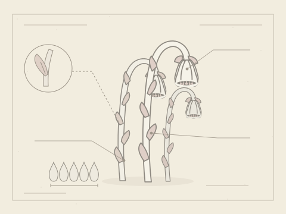

Six new vector studies demonstrate the recovered directions. Identifiable ghost pipe is drawn with scale leaves and one nodding flower per stem. These stylized studies are not botanical identification plates.
01 / rhythm · inversion · depth
Isometric botanical IDM

turquoise / forest / ivory
16-bit forms occupy a consistent isometric lattice. Paired paths imply communication through shared rhythm and alignment.
Use this preset <section data-uniflora="isometric-idm">
<h2>Your subject stays central</h2>
</section> Use the semantic color variables from tokens.css on your own components. See prompt example 01.
02 / contradictions · pressure · fold
Impossible engraved architecture

black / ivory / print
Readable local spaces form an impossible whole. Projection lines bend across the facets of an original tessellation.
Use this preset <section data-uniflora="engraved-architecture">
<h2>Your subject stays central</h2>
</section> Keep dense hatching behind the artwork, with clear paper around interface text. See prompt example 02.
03 / continuity · signal · phosphor
CRT botanical worlds
Enable slow screen scanline drift

cyan / magenta / forest
The bezel stays still. Optional distortion stays within the screen, preserving the forest and its landmarks.
Static by default. Reduced-motion preferences disable movement even when this control is checked. The ghost pipe is not naturally bioluminescent.
Use this preset <section data-uniflora="crt-worlds">
<h2>Your subject stays central</h2>
</section> For animation, lock the camera and clip every effect to the display interior. See prompt example 03.
04 / mist · refraction · distance
Nocturnal botanical optics

silver / lavender / teal
One focal plane anchors a quiet garden. Light separation and refraction create distance without obscuring the subject.
Optical glow and luminous lichen here are artistic interpretations, not biological claims.
Use this preset <section data-uniflora="nocturnal-optics">
<h2>Your subject stays central</h2>
</section> Keep bloom away from reading surfaces. Use optical effects sparingly. See prompt example 04.
05 / repetition · hook · reversal
Kilim and burdock

rust / teal / woven earth
Balanced repetition and 180-degree reversal give a card two equivalent orientations. Neighboring hooks establish rhythm.
A new geometric interpretation. No historical textile, regional provenance, or traditional meaning is claimed.
Use this preset <section data-uniflora="kilim-burdock">
<h2>Your subject stays central</h2>
</section> Reversal belongs to the art; keep reading order and interface labels upright. See prompt example 05.
06 / morphology · annotation · paper
Botanical specimen art

paper / graphite / green
Morphology controls the silhouette. Margins and leader lines adapt the study to a field-guide page, album cover, or poster.
Monotropa uniflora is a flowering plant that obtains carbon through fungi. Check botanical references before publishing identification material.
Use this preset <section data-uniflora="botanical-specimen">
<h2>Your subject stays central</h2>
</section> Use documented specimens for fine diagnostic details. Never invent measurements. See prompt example 06.